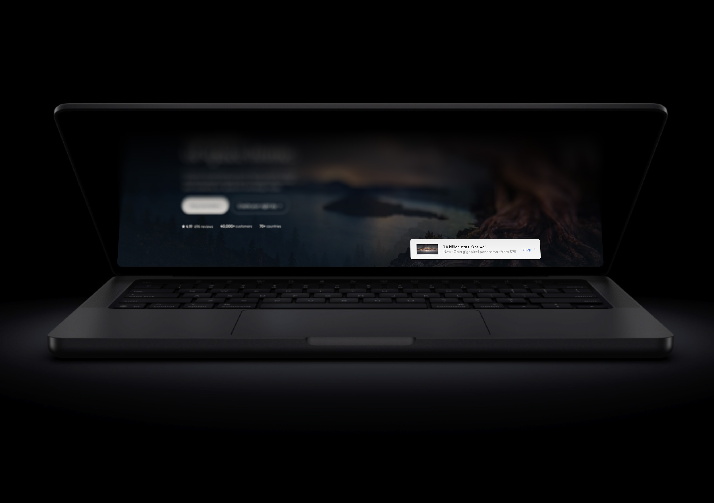
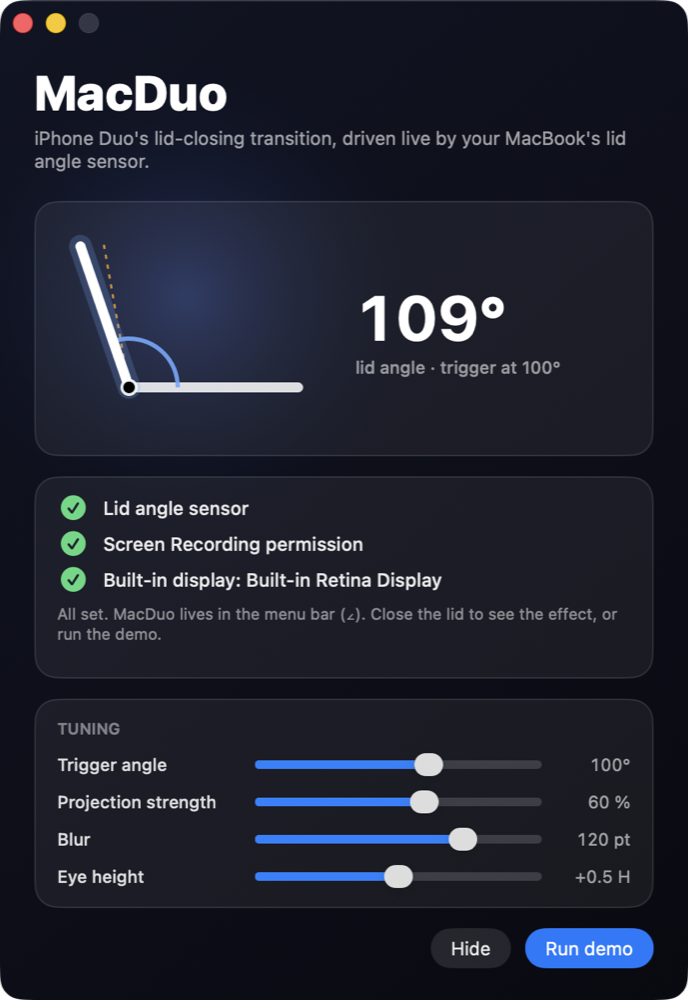

The sensor
A hidden HID device (usage page 0x20, usage 0x8A) answers a feature report with the lid angle in whole degrees. No permission needed. A critically damped spring filter turns the 1° steps into motion that follows your hand.

Close the lid. The screen stays where it was.
Try the fold
108°
On a real MacBook this is driven by the lid angle sensor, and the picture is the live screen, not a screenshot. This is a CSS sketch of the same idea.
What it does
Every MacBook since 2019 hides a lid angle sensor. MacDuo reads it, captures the built-in display live, and re-projects the picture every frame so that, from where you sit, it looks like the screen is still standing where it was while the glass folds through it. The far edge blurs and fades to black; the hinge edge stays sharp. Open the lid and it unfolds.
A hidden HID device (usage page 0x20, usage 0x8A) answers a feature report with the lid angle in whole degrees. No permission needed. A critically damped spring filter turns the 1° steps into motion that follows your hand.
A ScreenCaptureKit stream of the built-in display feeds IOSurface frames straight into the effect, with MacDuo's own windows excluded so it never captures itself. Cursor, video, animations — all still moving while folded. 120 fps on ProMotion.
A central projection from your eye between two planes sharing the hinge: the lid where it was, and the lid where it is now. It's a planar homography that Core Animation renders exactly.

In the box
Open it once. The status window shows the lid angle live, confirms the sensor, the Screen Recording permission and the built-in display, and lets you tune the feel.
swiftc, no Xcode project; signed and notarized DMG